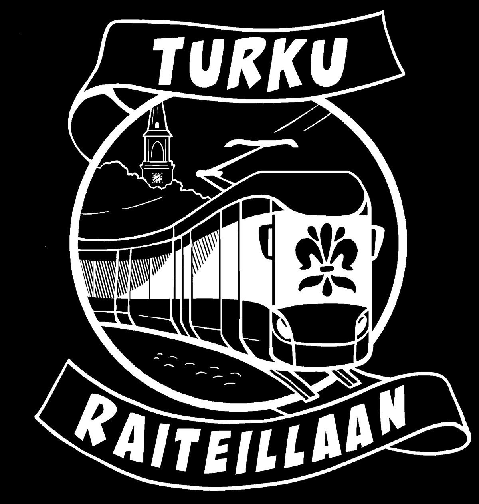

Turun vihreät
Ratikkapaita
Pue päälle kannanotto sujuvamman, vihreämmän ja viihtyisämmän Turun puolesta.
25 €
OstaMaksut, tilaustiedot ja kokovalinta tehdään Stripe-palvelussa.
Myyjä: Turun vihreät ry, Y-tunnus 2016520-8, Yliopistonkatu 37, 20100 TURKU.
Turun vihreiden ratikkapaita on rento unisex T-paita, joka toimii niin kampanjakentillä, kaupunkitapahtumissa kuin arjen suosikkipaitana.
Normaalia paksumpi 215 g/m2 luomupuuvillakangas pitää hyvin muotonsa ja rypistyy vähemmän kuin tavallinen T-paitakangas.
- Malli
- Unisex relaxed fit
- Materiaali
- 100 % luomupuuvilla
- Sertifikaatit
- Fair Wear, PETA-hyväksytty vegaaninen, OEKO-TEX ja GOTS
- Rakenne
- Set-in sleeve, 1x1 rib neck collar, twin needle topstitch
